© Ru Jia 2017 All rights reserved.
Food Calendar
In reality, some people are too busy to think about how to eat healthily, and how to prepare healthy food efficiently. Food Calendar is a mobile app that helps busy people manage their diet and buy fresh food. It connects healthy menu and local grocery stores with a food calendar. Users can buy food online according to their customized food calendar quickly and easily
Date
Sep 2016
Dec 2016
Role
UX/UI Designer
Project Scope
User Research, Prototyping, Usability Testing
Design Process
Divergent and Convergent Thinking
I used divergent approach and convergent approach alternatively. At the early stage, diverging thinking to idea with breadth and quantities, find opportunities and problem space. After synthesis ideas, I used converging thinking to prioritize ideas and emphasize on selecting and refining prototypes, but also use divergent thinking to explore details design.
Iterative Design Thinking
As the design requirement is broad, the iterative approach was also used at the early stage. It also allowed me to incorporate the feedback and learnings into the next iteration.
Problem
Being busy makes life unhealthy and hard
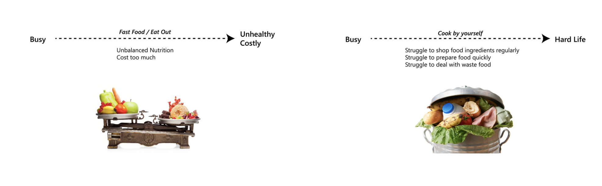- When people are busy, they often have to eat out. The nutrition of the diet is unbalanced and it often costs far more than cooking by themselves. Being busy makes life unhealthy and costly.
- Some people like cooking by themselves even they are busy. However, they are still struggling with preparing food, including food purchase and look up recipes. Sometimes, it also causes large amounts of food waste.
Solution Overview
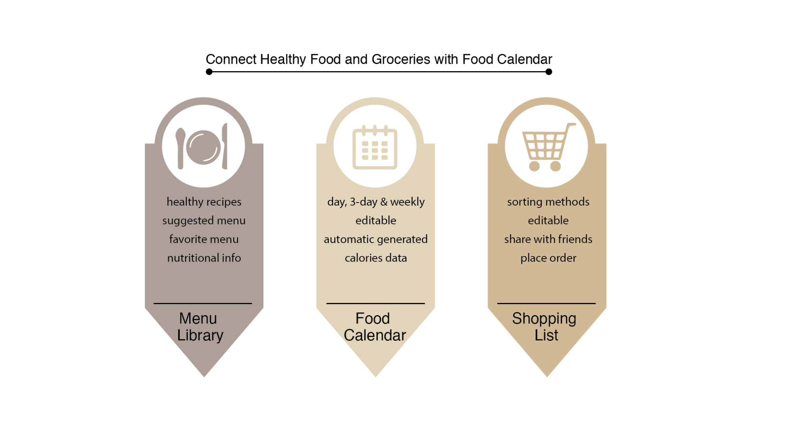Problem Define
Initial Idea –– Solve Obesity Problem
The topic of this course is to design a system that supports an activity or a relationship within the particular local context. Initially, I planned to solve problems about obesity. I planned to use technology to connect local community and help people get rid of obesity problem.
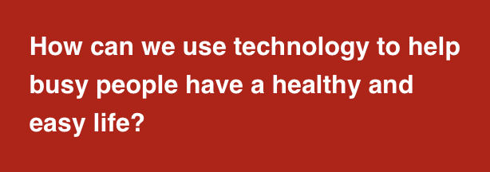Brainstorming Opportunities
Then I think about three aspects about obesity problem: the factors, potential target groups, and stakeholders. "Obesity Factor" and "potential target groups" are important to analyze human activities, and "stakeholders" are people or organization that could possibly build connection and provide support.
Find Relations Between Specific Problems
Changing overweight problem to "healthy diet problem"
The topic of this course is to design a system that supports an activity or a relationship within the particular local context. Initially, I planned to solve problems about obesity. I planned to use technology to connect local community and help people get rid of obesity problem.
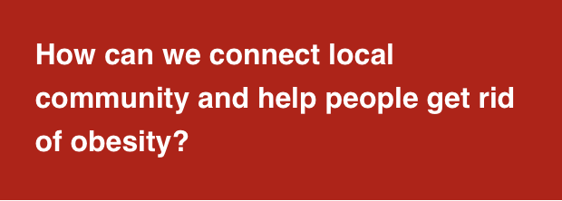Personas
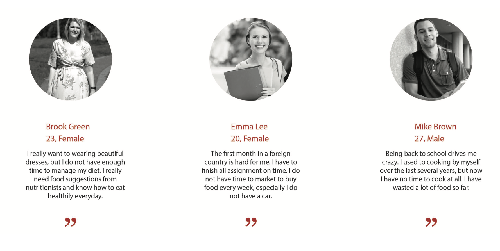Project Goal
Make busy life easier and healthier
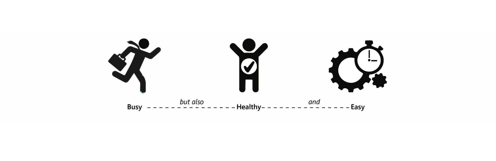Prototype
Paper Prototyping
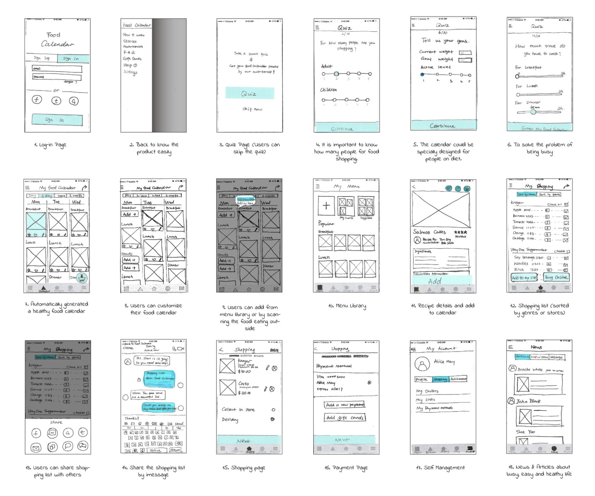Wireframe
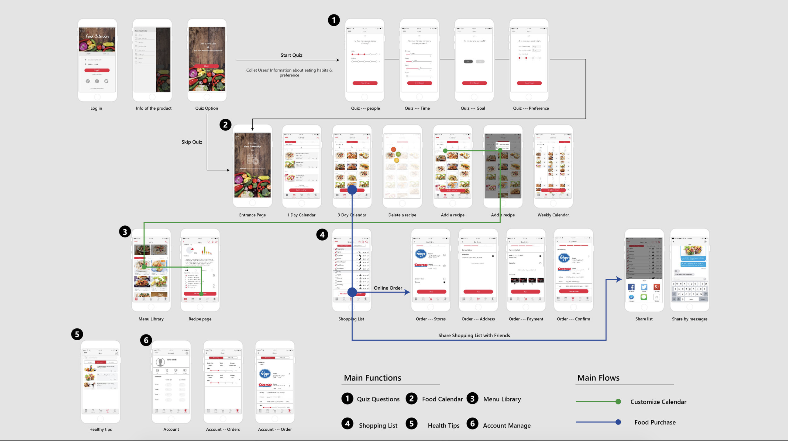Digital Prototype
Main Function 1: Customize Food Calendar
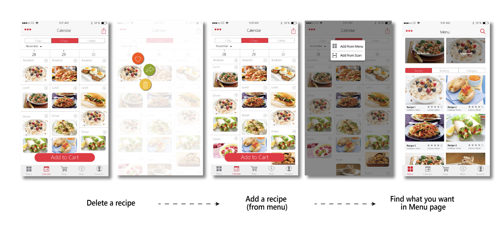Main Function 2: Shopping according to food calendar
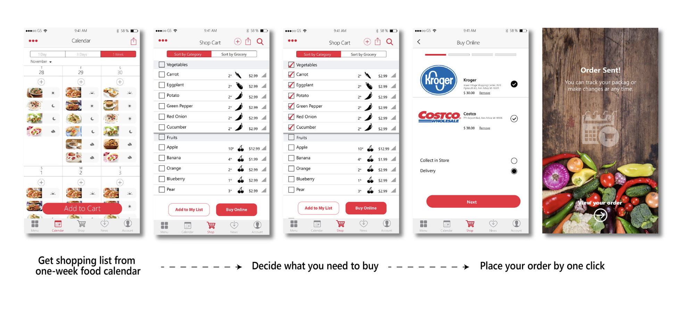Style Guide
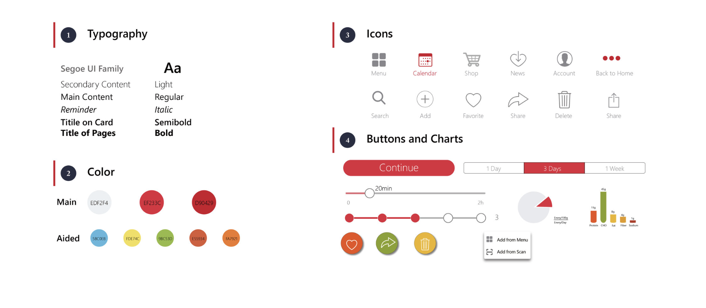Final Design

Evaluation
Why it solves the problem?
When I finished this project at the end of the first semester of HCI study, I thought I have successfully solve the problem I defined at the beginning of the semester. I tried to evaluate my solution by thinking about the goal of the product.
- Busy People Like to Use Calendars to Manage Their Life
- No Need to Think About How to Eat Healthily
- No Need to Go Grocery Stores
- Less Waste Food
- Less Cost on Food
How Easy it is
- Specifically Designed Recipes for Busy People
- Personalized Diet Plan Based on Nutrition Balanced Menu
- Recording Nutrition Intake Automatically
- Health Tips for Busy Life
- Healthy Menu Consulting
How Healthy It is
Reflection
Constrains – Lack of Research on Related Business
This course project emphasize the design methods and ideation, but not user research and testing. This may cause problems in functionality, usability and desirability.
If I have more time, I will refine my prototype and test it with real users. I will also research more about how related businesses interact with target users and how they use the tool to reach their business goal.